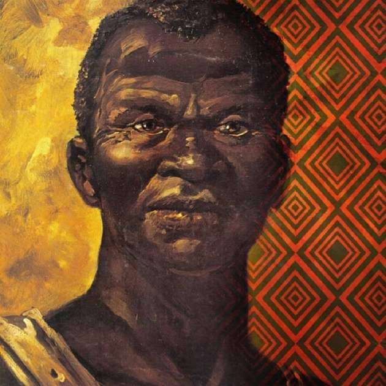
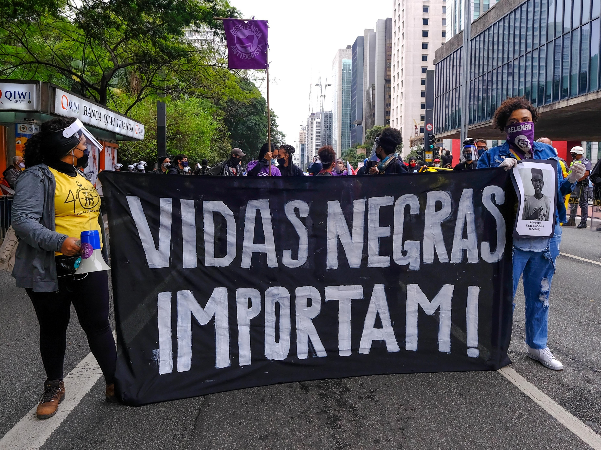
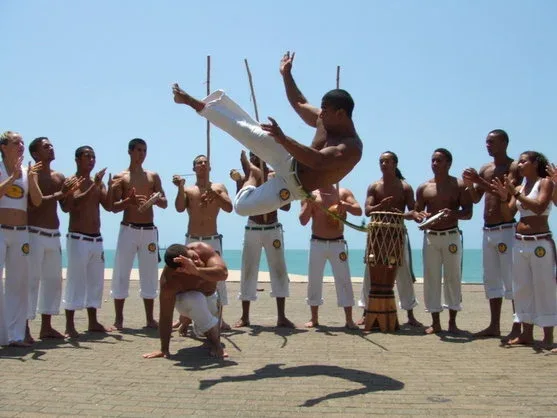

Welcome to the Black Consciousness Website
Black Consciousness is an invitation to reflect, learn, and celebrate the rich history and culture of Black people. Explore our sections to learn more about this struggle and heritage.
History
Zumbi dos Palmares and the Legacy of Resistance
Zumbi dos Palmares, a symbol of the fight against slavery, was a leader of Quilombo dos Palmares, the largest community of escaped slaves in Brazilian history. He dedicated his life to the pursuit of freedom and dignity for Black people. His story inspires us to never give up the fight for justice and equality.
Fighting Racism: A Collective Commitment
Racism is a structural problem that affects millions of people. It manifests in individual attitudes but also in institutional policies and practices. To fight it, we need to educate, raise awareness, and act. Black Consciousness reminds us that this fight is not just for Black people but for everyone who desires a more equal world.


Culture
The African Influence in Brazil
The richness of Brazilian culture owes much to African influence. In music, we have samba, maracatu, and axé. In cuisine, acarajé, feijoada, and vatapá are direct inheritances. In vocabulary, words like 'axé,' 'moleque,' and 'dendê' have African origins. Celebrating Black Consciousness means recognizing that these contributions are an essential part of national identity.
Pride in Ancestry
Black Consciousness is also a celebration of African ancestry. It is a time to connect with the roots that sustain Black identity. Through dance, music, religion, or cuisine, honoring ancestors means reclaiming a legacy of wisdom, strength, and resilience.


Empowerment
Empowerment and Representation
Representation matters. When Black youth see people who look like them in prominent positions, they feel motivated to dream big. Black Consciousness is also about empowerment: recognizing the value of ancestry and building collective self-esteem. It is a celebration of the beauty, strength, and intelligence of the Black community.
Black Women in Leadership
Black women have been protagonists in the fight for human rights, gender equality, and representation. Names like Carolina Maria de Jesus, Lélia Gonzalez, and Marielle Franco are examples of courage and determination. By honoring them, we celebrate the strength of Black women and recognize their invaluable contributions to society.
Education
Education is the key to social transformation. Teaching about Black history and culture in schools is essential to deconstruct prejudices and promote the appreciation of diversity. Through knowledge, we can build a more conscious and inclusive society.